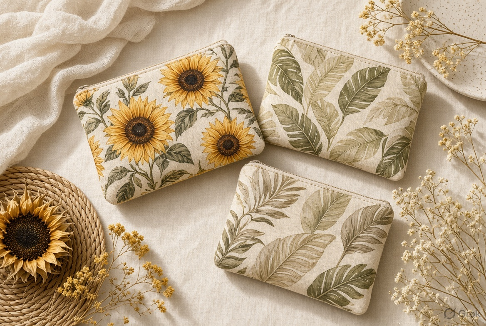
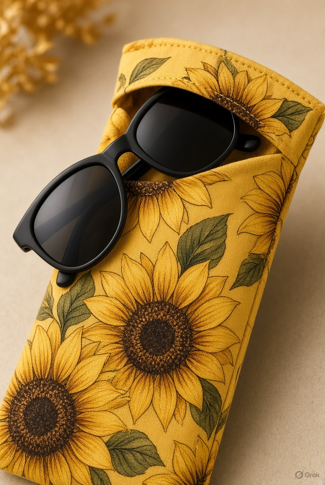

Every Ju-Mo pouch is carefully handmade by Julie, designed to protect your glasses and sunglasses with style and love.
Inspired by nature’s warmth — sunflowers, soft florals, and gentle textures — each piece is unique and made just for you.
Perfect for everyday carry, travel, or as a thoughtful gift.

Beautiful handmade pouches for specs & sunglasses
Soft fabric with cheerful sunflower print. Perfect for everyday glasses.
Elegant leaf design in soft greens and neutrals. Lightweight and protective.
Ask Julie about available patterns or custom options. Each pouch is made with care.
Ready to order or have a question? Julie would love to hear from you.